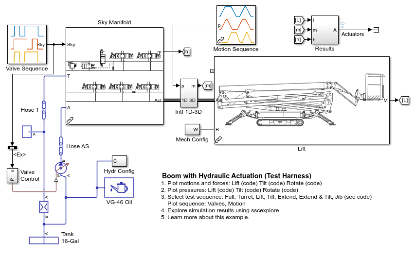
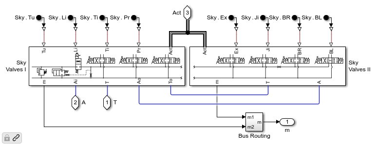
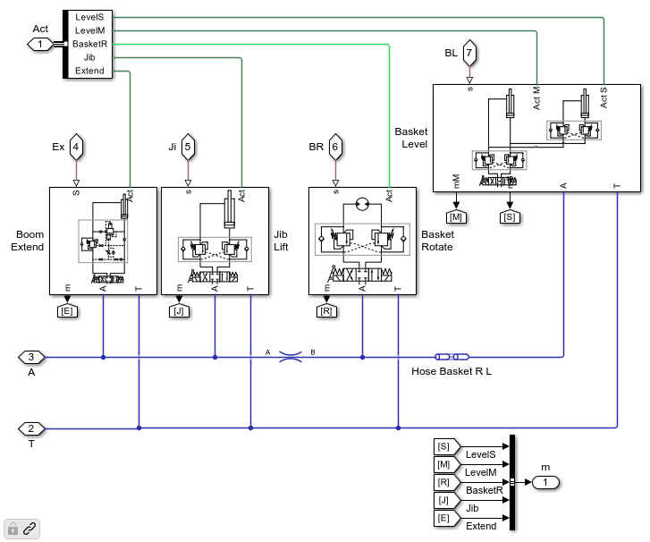
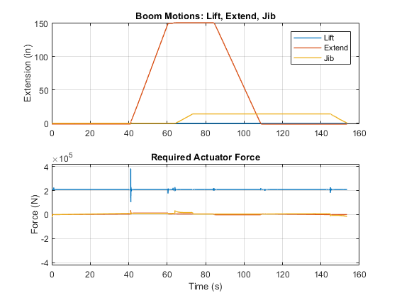
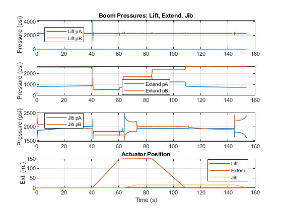

Boom with Hydraulic Actuation (Test Harness)
This example models the hydraulic system for all actuators on boom mechanism of a boom lift. Seven actuators plus one passive cylinder raise and position a basket at the end of a boom. This model is used to examine the hydraulic system.
This model is a test harness from the main model (see documentation).
Contents
Model
Component Under Test
The component under test is the hydraulic system for lifting, tilting, extending, and rotating the boom and basket of a boom lift.
This portion of the hydraulic network includes the actuators to rotate, raise, and tilt the telescoping arm.
This portion of the hydraulic network includes the actuators to extend the telescoping arm, raise and orient the basket, and a closed hydraulic circuit to keep the basket level.
Simulation Results: Extend Sequence
The plots below shows the result of a test sequence designed to extend the boom. Tilt and jib extend functions are also activated to see the effect on the extend actuation system. The test sequence includes signals for all valves so that the test sequence can also be run on the full model.
Below is the corresponding prescribed motion for the test. This allows testing on a full model that has motion for any combination of the actuators.

Motion of the lift, extend, and jib cylinders along with applied actuator force.
Hydraulic pressures in the actuators along with actuator position.
